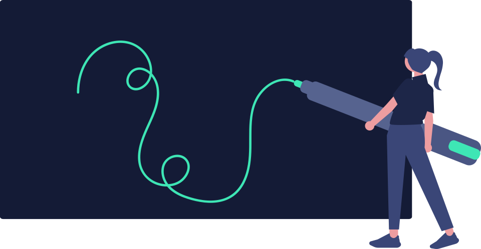

01Історія графічної культури. Дизайн та його тенденції▼
Графічна культура — це все, що люди створювали, щоб передати думку зображенням і знаком: від наскельних малюнків до логотипів і інтерфейсів застосунків. Графічний дизайн — це проєктування візуальних повідомлень: дизайнер поєднує текст, шрифт, колір, зображення й композицію так, щоб глядач швидко зрозумів ідею і зробив потрібну дію. Кожна епоха мала свої технології (різець, перо, друкарський верстат, комп’ютер), і саме вони щоразу змінювали вигляд дизайну.
Як змінювалась графічна культура
- ≈ 40–17 тис. років томуНаскельні малюнки (печери Ласко, Альтаміра) — перші зображення, що передають інформацію про полювання й побут.
- ≈ 3200 р. до н. е.Клинопис шумерів і єгипетські ієрогліфи: зображення перетворюються на систему знаків — писемність.
- ≈ 1050 р. до н. е.Фінікійський алфавіт: кожен знак позначає звук. Від нього походять грецька, латинська та кирилична абетки.
- СередньовіччяРукописні книги з ініціалами, орнаментом і мініатюрами — книжкова графіка створюється вручну.
- ≈ 1450 р.Йоганн Гутенберг винаходить друкарський верстат із рухомими літерами — тексти можна тиражувати.
- 1574 р.Іван Федоров друкує у Львові «Апостол» — першу датовану друковану книгу в Україні.
- Кінець XIX ст.Кольорова літографія і модерн: яскраві плакати Жуля Шере та Альфонса Мухи — народження рекламного плаката.
- 1918 р.Георгій Нарбут створює українські гроші та марки, Василь Кричевський — малий герб УНР (тризуб).
- 1919 р.Школа Баугауз у Німеччині: прості геометричні форми, функціональність, принцип «форма слідує функції».
- 1950-тіШвейцарський (інтернаціональний) стиль: модульна сітка, асиметрія, шрифти без засічок; 1957 — шрифт Helvetica.
- 1980-тіПерсональні комп’ютери й програми верстки: дизайн переходить на екран (настільні видавничі системи).
- 1987–1990Виходять Adobe Illustrator і Photoshop — інструменти, якими дизайнери користуються й сьогодні.
- 2010-тіСмартфони, вебсайти й соцмережі: флет-дизайн, адаптивні інтерфейси, іконки й моушн-дизайн.
- 2020-тіГенеративний ШІ, 3D, змінні шрифти, дизайн-системи — дизайнер стає ще й куратором ідей.
Де працює графічний дизайн
Сучасні тенденції дизайну
- Мінімалізм і «повітря»: менше елементів — сильніше повідомлення.
- Великі виразні шрифти та яскраві градієнти як головний акцент.
- 3D-графіка, об’ємні ілюстрації й ефект скла (glassmorphism).
- Ретро- та Y2K-стилістика, повернення до естетики 70-х, 90-х і 2000-х.
- Темні теми інтерфейсів і доступність: контраст, читабельність для всіх.
- Моушн-дизайн: анімовані логотипи, короткі відео замість статичних картинок.
- Генеративний ШІ як помічник для ескізів — фінальне рішення залишається за дизайнером.
Тенденції швидко змінюються, тому важливо не копіювати моду, а розуміти базові принципи: композицію, контраст, ієрархію, колір і типографіку. Вони працюють у будь-якому стилі.
Перевір себе
- Чому винахід Гутенберга вважають переворотом у графічній культурі?
- Що означає принцип Баугаузу «форма слідує функції»? Наведи приклад з життя.
- Які риси має швейцарський стиль і де його можна побачити сьогодні?
- Назви трьох українських митців, що вплинули на графічну культуру, та їхні роботи.
- Яку сучасну тенденцію дизайну ти помічаєш найчастіше? Де саме?
Ключові поняття
- Графічний дизайн
- проєктування візуальних повідомлень
- Візуальна комунікація
- передавання інформації через зображення
- Типографіка
- мистецтво оформлення тексту шрифтом
- Модерн
- стиль кінця XIX — поч. XX ст. з плавними лініями та рослинним орнаментом
- Баугауз
- німецька школа дизайну 1919–1933 рр., принцип «форма слідує функції»
- Швейцарський стиль
- модульна сітка, асиметрія та шрифти без засічок
Корисні ресурси
- Vitrum — 3D-логотип з картинки — перетворює 2D-логотип чи зображення на об’ємний 3D-логотип
- Google Arts & Culture — колекції плакатів і дизайну світових музеїв
- Вікіпедія: Графічний дизайн — історія та напрями
- Вікіпедія: Баугауз — найвідоміша школа дизайну XX століття
- Вікіпедія: Георгій Нарбут — український графік, автор перших гривень і марок
- Вікіпедія: Альфонс Муха — майстер плаката доби модерну
Інструменти
02Дизайн та його тенденції▼
Тенденції дизайну змінюються щороку: мінімалізм і багато «повітря», сміливі градієнти, 3D-ілюстрації, великі виразні шрифти, ретро-стилі, неоморфізм. Дизайнер стежить за трендами, але обирає те, що допомагає саме його повідомленню, а не просто модне.
Як змінювались тренди останніх років
- до 2013Скевоморфізм: інтерфейси імітують справжні матеріали — шкіру, дерево, папір, тіні й блиск.
- 2010–2013Флет-дизайн: плоскі кольорові форми без тіней (плитки Windows, iOS 7) — простіше і зрозуміліше на малих екранах.
- 2014Material Design від Google: «плоскі аркуші паперу» з легкими тінями, що показують, що над чим лежить.
- 2020Неоморфізм — м’які опуклі кнопки на однотонному фоні; glassmorphism — ефект матового скла.
- 2022+3D та «пластилінові» форми, ретро і Y2K, великі шрифти, генеративний ШІ як помічник.
Головні напрями сучасного дизайну
Як користуватися трендами з розумом
- Спершу визнач задачу й аудиторію — тренд має допомагати повідомленню, а не заважати.
- Перевіряй читабельність: модний тонкий шрифт на градієнті може бути непомітним.
- Логотип і фірмовий стиль робляться на роки — не будуй їх лише на моді цього сезону.
- Збирай натхнення в мудборд (Pinterest, Behance, Dribbble), але не копіюй чужі роботи.
Перевір себе
- Чим скевоморфізм відрізняється від флет-дизайну?
- Назви три сучасні тренди та приклад, де ти їх бачив.
- Чому логотип не варто робити лише за модою сезону?
- Що таке мудборд і навіщо він дизайнеру?
Ключові поняття
- Мінімалізм
- лише найнеобхідніші елементи
- Флет-дизайн
- плоскі форми без тіней і об’єму
- Тренд
- популярний на цей момент стиль
- Скевоморфізм
- імітація справжніх матеріалів і предметів в інтерфейсі
- Glassmorphism
- ефект матового напівпрозорого скла
- Мудборд
- дошка з добіркою зображень для натхнення й настрою проєкту
Корисні ресурси
- Vitrum — 3D-логотип з картинки — перетворює 2D-логотип чи зображення на об’ємний 3D-логотип
- Behance — роботи професійних дизайнерів
- Dribbble — сучасні тренди в UI та ілюстрації
- Pinterest — збирай мудборди за трендами
Інструменти
03Ілюстрація. Цифрове мистецтво▼
Ілюстрація пояснює або прикрашає текст: у книгах, рекламі, на упаковці, в інтерфейсах. Цифрове мистецтво створюють на комп’ютері чи планшеті: цифровий живопис, векторна ілюстрація, піксель-арт, 3D-графіка, генеративне мистецтво.

Види ілюстрації
Стилі цифрової ілюстрації
- Векторна флет-ілюстрація — прості форми й чисті кольори (як на цьому сайті).
- Лайн-арт — малюнок самими лініями, без заливки.
- Цифровий живопис — мазки пензлем, як фарбами на полотні.
- Піксель-арт — зображення з видимих квадратиків-пікселів, стиль старих ігор.
- Ізометрія — псевдо-3D з однаковими кутами, популярна в інфографіці.
- 3D-ілюстрація — об’ємні моделі, освітлення й матеріали.
Від ідеї до готової ілюстрації
- Крок 1Бриф: що треба показати, для кого й де буде розміщено.
- Крок 2Референси й мудборд: добірка прикладів стилю, кольорів, поз.
- Крок 3Ескізи: кілька швидких варіантів композиції олівцем.
- Крок 4Лайн: чистовий контур обраного ескізу.
- Крок 5Колір: основні заливки, потім світло й тіні.
- Крок 6Деталі, текстури й експорт у потрібному форматі (PNG, SVG, JPG).
Інструменти цифрового художника
Генеративний ШІ вміє створювати картинки за текстом, але ілюстратор відповідає за ідею, стиль і якість. Використовуючи чужі роботи чи результати ШІ, вказуй джерело й не видавай їх за власні.
Перевір себе
- Чим редакційна ілюстрація відрізняється від рекламної?
- Назви етапи створення ілюстрації від брифу до експорту.
- Який стиль ілюстрації підійде для інструкції до приладу? Чому?
- Які плюси та мінуси використання ШІ в ілюстрації?
Ключові поняття
- Ілюстрація
- зображення, що доповнює текст
- Цифровий живопис
- малювання пензлями в графічному редакторі
- Піксель-арт
- зображення, створене по пікселях
- Референс
- зображення-приклад, на яке орієнтується художник
- Лайн-арт
- малюнок лише лініями, без заливки
- Концепт-арт
- ескізи персонажів і світів для ігор та фільмів
Корисні ресурси
- ArtStation — портфоліо цифрових художників
- Behance: Illustration — пошукай «illustration» — роботи ілюстраторів з усього світу
Інструменти
04Сучасна реклама та фірмовий стиль: напрямки, стилі, тренди▼
Фірмовий стиль — це єдиний візуальний образ компанії: логотип, кольори, шрифти, графічні елементи. Він робить бренд впізнаваним. Правила використання стилю збирають у брендбук. Сучасна реклама — це не лише білборди, а й таргетована реклама в соцмережах, інфлюенсери, відеоролики.
Що входить у фірмовий стиль
Види логотипів
- Шрифтовий — лише назва особливим шрифтом (Google, Coca-Cola).
- Буквений — абревіатура з кількох літер (IBM, HBO).
- Знак-символ — зображення без тексту (яблуко Apple).
- Комбінований — знак + назва (крокодил і напис Lacoste).
- Емблема — текст усередині фігури, як печатка чи герб (Harley-Davidson).
Канали сучасної реклами
Брендбук
Брендбук — це «інструкція» до фірмового стилю: як розміщувати логотип і яке поле навколо нього лишати, які кольори й шрифти використовувати, приклади правильного та неправильного використання, шаблони носіїв. Завдяки брендбуку реклама, сайт і вивіска виглядають як одне ціле, навіть якщо їх роблять різні дизайнери.
Перевір себе
- Що входить у фірмовий стиль? Назви щонайменше п’ять складників.
- Наведи приклади шрифтового, знакового й комбінованого логотипів.
- Чим таргетована реклама відрізняється від контекстної?
- Навіщо компанії брендбук?
Ключові поняття
- Логотип
- графічний знак компанії
- Брендбук
- посібник з правилами використання фірмового стилю
- Таргетинг
- показ реклами лише потрібній аудиторії
- Айдентика
- вся система візуальних і словесних ознак бренду
- Охоронне поле
- вільний простір навколо логотипа, куди не можна нічого ставити
- Tone of voice
- стиль і манера, якими бренд звертається до людей
Корисні ресурси
- Behance: Branding — пошукай «brand identity» — тисячі прикладів брендбуків
Інструменти
05Реклама. Психологія сприйняття реклами▼
Реклама впливає на емоції та увагу: кольори викликають асоціації (червоний — енергія, синій — довіра, зелений — природа), образи людей викликають довіру, короткий слоган легко запам’ятати. Класична модель AIDA: Увага → Інтерес → Бажання → Дія. Важливо вміти розпізнавати маніпулятивну рекламу.
Модель AIDA крок за кроком
- A — AttentionУвага: яскравий образ, контрастний колір, несподіваний заголовок.
- I — InterestІнтерес: коротко про те, чим це корисно саме тобі.
- D — DesireБажання: вигоди, емоції, відгуки, «уяви, як це буде».
- A — ActionДія: чіткий заклик — «Купити», «Записатися», «Спробувати безкоштовно».
Психологічні прийоми реклами
Колір у рекламі
Як не піддатися маніпуляції
- Зроби паузу: «лише сьогодні» майже завжди повториться завтра.
- Порівняй ціну в кількох магазинах — закреслена ціна могла бути вигаданою.
- Шукай незалежні відгуки, а не лише ті, що на сайті продавця.
- Запитай себе: мені це справді потрібно чи я просто піддався емоції?
В Україні діє Закон «Про рекламу»: він забороняє недобросовісну рекламу, яка вводить в оману щодо товару, ціни чи властивостей.
Перевір себе
- Розшифруй модель AIDA й наведи приклад для кожного етапу.
- Знайди в соцмережах рекламу, що використовує дефіцит або терміновість.
- Який колір ти обереш для реклами банку, а який — для розпродажу? Чому?
- Як розпізнати маніпулятивну рекламу?
Ключові поняття
- AIDA
- Attention, Interest, Desire, Action — етапи впливу реклами
- Психологія кольору
- емоційний вплив кольорів на людину
- Слоган
- короткий запам’ятовуваний рекламний вислів
- Заклик до дії (CTA)
- кнопка чи фраза, що підказує наступний крок
- Соціальний доказ
- вплив думки й поведінки інших людей
- Недобросовісна реклама
- реклама, що вводить споживача в оману
Корисні ресурси
- Вікіпедія: Реклама — види та історія реклами
- Закон України «Про рекламу» — вимоги до реклами та заборона недобросовісної реклами
06Інфографіка▼
Інфографіка — це спосіб швидко пояснити складне: числа, процеси, порівняння подаються діаграмами, іконками й коротким текстом. Хороша інфографіка має одну головну ідею, логічну послідовність читання, обмежену палітру та посилання на джерело даних.
Ключові поняття
- Інфографіка
- візуальне подання даних і знань
- Піктограма
- спрощене зображення-символ
- Ієрархія
- порядок, у якому глядач читає елементи
Корисні ресурси
- Information is Beautiful — зразки інфографіки
- The Noun Project — мільйони іконок
Інструменти
07Практична робота: Розробка інфографікипрактична▼
Створи інфографіку на тему своєї професії або безпеки праці: заголовок, 3–5 блоків з фактами чи цифрами, іконки, джерело даних. Використай не більше 3–4 кольорів і 2 шрифтів.
Інструменти
08Типографіка, шрифти і шрифтові пари▼
Типографіка — мистецтво оформлення тексту. Шрифти бувають з засічками (антиква), без засічок (гротеск), рукописні та декоративні. Шрифтова пара — поєднання двох шрифтів: виразний для заголовків і простий для основного тексту. Для українських текстів обирай шрифти з підтримкою кирилиці.
Ключові поняття
- Гарнітура
- сімейство шрифтів одного дизайну
- Кегль
- розмір шрифту
- Інтерліньяж
- відстань між рядками
- Кернінг
- відстань між окремими парами літер
Корисні ресурси
- KernType — гра на кернінг — потренуй око типографа
- Fontpair — готові шрифтові пари
- Typewolf — шрифти, які використовують на реальних сайтах
Інструменти
09Електронні та друковані портфоліо▼
Портфоліо — добірка найкращих робіт, яка показує твої вміння роботодавцю чи замовнику. Електронне портфоліо — сайт або профіль на Behance; друковане — альбом чи буклет. До кожної роботи додай назву, короткий опис задачі та свою роль.

Ключові поняття
- Портфоліо
- презентація найкращих робіт автора
- Кейс
- опис роботи: задача → рішення → результат
Корисні ресурси
- Behance — найпопулярніша платформа портфоліо дизайнерів
Інструменти
10Тематична атестаціяатестація▼
Повтори: історію графічного дизайну, тенденції, види ілюстрації, фірмовий стиль і рекламу, AIDA, інфографіку, типографіку й портфоліо.

Перевір себе з розділу 5
10 випадкових карток із ключовими поняттями розділу. Що не згадав — підкажемо, де повторити.
🃏 Почати картки